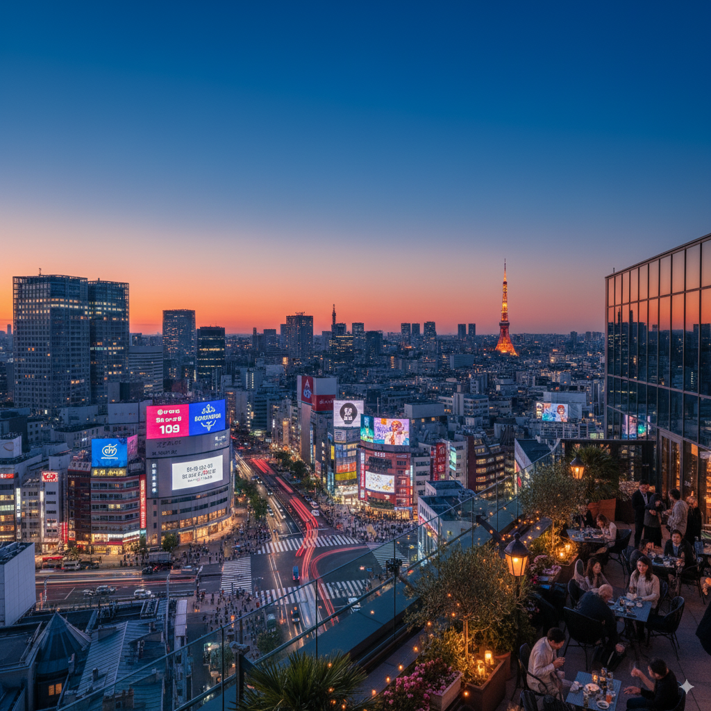
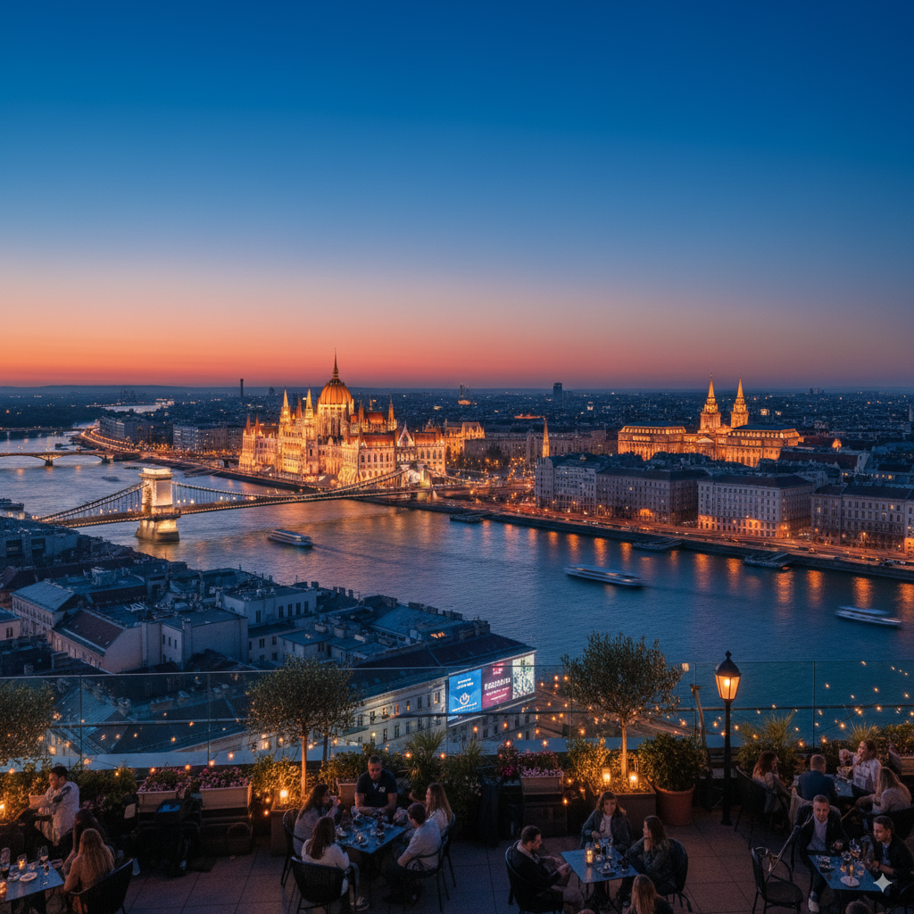

Tokyo is a bustling metropolis blending the ultramodern and the traditional,
from neon-lit skyscrapers to historic temples. Key attractions include Shibuya Crossing, Senso-ji Temple, and Tsukiji Market.

Best time to visit: March to May, October to November
Must-try food: Sushi, Ramen, Tempura
Popular activities: Visit Akihabara, Explore Harajuku, Day trip to Mt. Fuji
Budapest, the capital of Hungary, is known for its stunning architecture, thermal baths, and vibrant nightlife. Don't miss the Buda Castle, Parliament Building, and Széchenyi Thermal Bath.

Best time to visit: March to May, September to November
Must-try food: Goulash, Langos, Chimney Cake
Popular activities: Cruise on the Danube, Explore ruin pubs, Visit Fisherman's Bastion